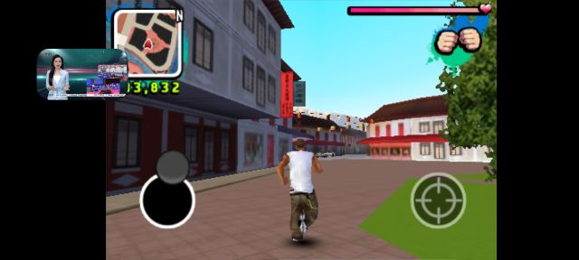
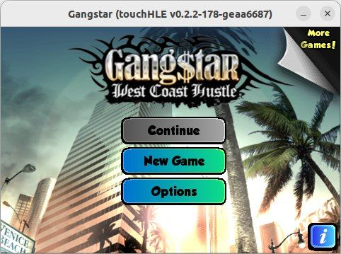
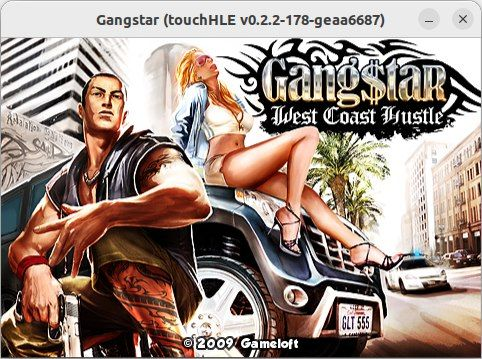
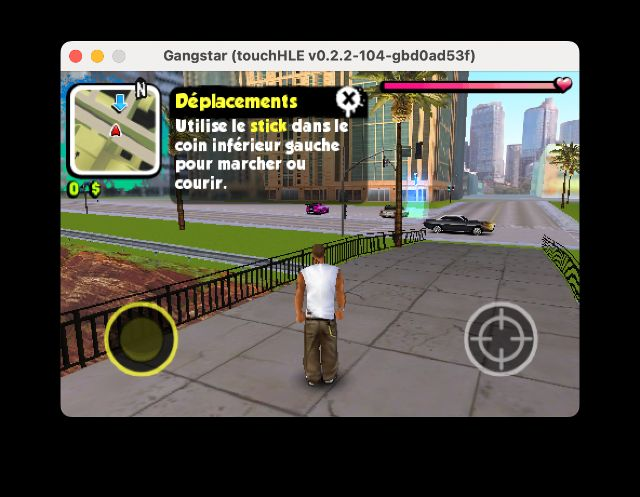

| App name | Gangstar: West Coast Hustle |
|---|---|
| Release year | 2009 |
| Developer/Publisher | Gameloft |
| First reported | |
| First reported by | @ciciplusplus |
| Version number | Display name | Bundle identifier | Minimum iOS version | Best rating | Last updated | First reported by | |
|---|---|---|---|---|---|---|---|
| 1.0.3 | Gangstar | com.gameloft.Gangstar | 2.2.1 | ⭐️⭐️⭐️⭐️ | @ciciplusplus | ||
| 1.1.3 | Gangstar | com.gameloft.Gangstar | 2.2.1 | ⭐️⭐️ | @nighto | ||
| 1.2.0 | Gangstar | com.gameloft.Gangstar | 2.2.1 | ⭐️⭐️ | @nighto | ||
| 1.4.8 | Gangstar | com.gameloft.Gangstar | 3.1.3 | ⭐️ | @nighto |
| Version number | touchHLE version | Operating system | GPU | Scale hack supported? | Rating | Reported | Reported by | Remarks | Screenshot |
|---|---|---|---|---|---|---|---|---|---|
| 1.0.3 | 0.2.3 | Android 13 | go search nubia neo 2's gpu | Didn't test | ⭐️⭐️⭐️⭐️ | @gtuyirhtiu | a tiny lag when starting the game and some menus crashed but I still 100%ed the game anyway | View | |
| 1.4.8 | v0.2.2-796-g8bb9c62 | Windows 10 | RTX 3080 | Couldn't test | ⭐️ | @Virjoinga | Crashes with: assertion failed: found ns_object | ||
| 1.2.0 | v0.2.2-177-gec7ba5e | Ubuntu 22.04 | Intel UHD Graphics 620 | Yes | ⭐️⭐️ | @nighto | This version also crashes on New Game > Loading with 76% but with a different error: thread 'main' panicked at src/environment.rs:762:13: Error during CPU execution: MemoryError | View | |
| 1.1.3 | v0.2.2-177-gec7ba5e | Ubuntu 22.04 | Intel UHD Graphics 620 | Yes | ⭐️⭐️ | @nighto | Reaches main menu but crashes at 77% on loading screen with: thread 'main' panicked at src/mem.rs:337:9: Attempted null-page access at 0x0 (0x4 bytes) | View | |
| 1.4.8 | v0.2.2-176-ge52f3fb | Ubuntu 22.04 | Intel UHD Graphics 620 | Didn't test | ⭐️ | @nighto | Crashes with: thread 'main' panicked at src/frameworks/foundation/ns_keyed_unarchiver.rs:83:56: called `Result::unwrap()` on an `Err` value: Error { inner: ErrorImpl { kind: InvalidXmlSyntax, file_position: Some(LineColumn(0, 0)) } } | ||
| 1.0.3 | v0.2.2-104-gbd0ad53f | macOS Sonoma 14.5 | Apple M1 GPU | Yes | ⭐️⭐️⭐️⭐️ | @ciciplusplus | Some menus can crash, it seems to not affect the playability of the game | View |
| Rating | Description |
|---|---|
| ⭐️ | Completely broken: app crashes immediately without any user interaction. |
| ⭐️⭐️ | Only (part of) the main menu, intro or similar is working. |
| ⭐️⭐️⭐️ | Some of the main content of the app works, but with major issues. |
| ⭐️⭐️⭐️⭐️ | The main content of the app works (e.g. entire game is playable) with only small issues. |
| ⭐️⭐️⭐️⭐️⭐️ | Everything works. The app is fully usable. |



